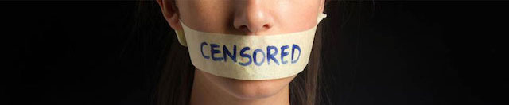
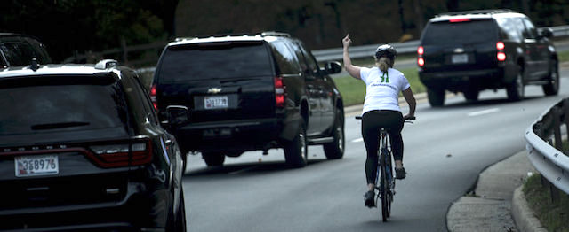
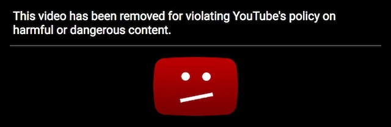
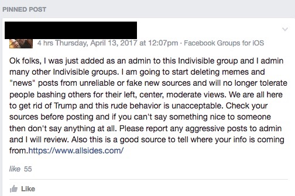

2019-05-05 08:00

This week Donald Trump tweeted that his administration was “looking into” the “banning” of conservatives on “liberal” social media. With a conservative stranglehold on talk radio and powerful news outlets like FOX and Sinclair effectively functioning as mouthpieces for Trump’s policies, on the face of it Trump’s charges seem ridiculous. But Trump’s criticism hit an unexpected nerve with friends of free speech. Censorship in social media may not exclusively target conservatives, but it’s a very real thing.
A while ago I taught a citizenship class. If you read though the one hundred official U.S. citizenship questions, only one amendment — the First — gets any love. Not one question mentions any of the other amendments to the Constitution — and for good reason. It would be tough to explain school prayer, bowing to Evangelicals on abortion and adoption, stop and frisk, illegal wiretapping, blanket surveillance, cruel prison punishments including death by mystery cocktail, violations of habeus corpus, excessive bail, the lack of speedy trials, voter suppression, systemic racism, Constitution-free borders, limited “free speech zones,” and prosecutorial practices that effectively deny an accused person the right to a jury trial.
And what would be the point? Many of my students came from places where American “democracy” has propped up dictators and taught genocide and torture to their militaries. Or maybe these prospective Americans just looked around and noticed that, around here, civil liberties don’t really apply to immigrants or people of color.
Nevertheless, the citizenship questions give star billing to the First Amendment, which “guarantees” freedoms of speech, religion, assembly, and the right to petition the government. The First Amendment is clearly the beating heart of American democracy — for the writers of the citizenship test — and it’s almost an article of their faith that it grants us rights found nowhere else on earth.
But in truth the First Amendment is a completely toothless piece of text that does little to stop abuses arising from telling people what you think.
Read the fine print. The Constitution promises that the government won’t go after you for your views or interests — although it certainly has and does. Donald Trump, for example, tried to go after 1.3 million people who may have clicked on a website dedicated to disrupting his low-attendance inauguration. But besides attacking the First Amendment, the president’s sweeping demand for ISP data was also a violation of the Fourth Amendment. Reporters sans Frontieres ranks the United States 43rd in press freedom, a sign it’s pretty much on life support. And when Trump began targeting the Black Lives Matter movement, it was only the most recent example of a government that has always done expressly what the First Amendment forbids.
Now while the First Amendment theoretically keeps the government from silencing you, there’s absolutely nothing to stop an employer, a social or political organization, a business, or a school from censoring, expelling or punishing you. Adjunct professor Lisa Durden found this out when she was fired for defending Black Lives Matter on FOX News — not because the popular teacher had done anything wrong at her community college. White supremacist Richard Spencer lost his gym membership because of his views — not because of any specific behavior at the gym. Juli Briskman was canned by her employer for a third party photo showing her giving Donald Trump the middle finger as his motorcade sped past her while she was bicycling. The excuse given by Akima, a federal contractor — Briskman “violated” the company’s social media policy.

Americans regard China’s Great Firewall — which censors what Chinese citizens can view online — as a significant feature of authoritarian rule in that country. Yet the only difference between Chinese and American censorship is that here in the United States it’s been outsourced to corporations and employers — and, increasingly, internet service companies.
Twitter censored Politwoops, a group exposing backtracking and lying by politicians who delete or alter their ill-considered Twitter posts. Facebook censors content for both China and for the United States. When activist Mary Canty Merrill penned an open letter, “Dear White People,” she was censored by Facebook. Conservative Google employee James Damore wrote an internal memo criticizing his company’s diversity programs and was immediately terminated.
Some think the Internet is open and free. But remember — the Internet began its life as a defense industry (DARPA) project, and U.S., European, Chinese, Saudi, and other laws actually compel service providers to monitor and censor content while also delivering personal data (either lawfully or under secret programs like PRISM) to spy agencies. The U.S. government even forces ISPs to lie about it after the fact.

The internet, also as a consequence of the many lunatics who post on it, has become a gratuitously censored place. Social networks go out of their way to sanitize “offensive” or “upsetting” content. Google, Facebook, and Twitter — for all the hate speech they manage to monetize — feel obliged to protect us from beheadings, nursing mothers, the aftermath of terror attacks, radical manifestos, and “harmful” or “dangerous” hyperbole from both right and left. Julian Assange and Chelsea Manning are both sitting in jail now because they posted proof of U.S. war crimes, including a video of the 2007 murder of two Reuters reporters by the U.S. military.
A dangerous consequence of overt censorship is self-censorship. With enough positive or negative reinforcement people simply stop telling you what they really think. Or, if they persist, someone will censor them for simple lack of “civility.” In the aftermath of the 2016 election I observed this phenomenon as Bernie and Hillary people duked it out. One moderator of an Indivisible group decided to shut down debate by insisting on acceptable views, acceptable discussion, acceptable tone, and acceptable news sources.

In the preface to one edition of Animal Farm, George Orwell noted that popular opinion is often a greater threat to freedom of thought and expression than authoritarian government, and that anyone who chafes against prevailing orthodoxy often “finds himself silenced with surprising effectiveness” by his own friends.
… the chief danger to freedom of thought and speech at this moment is not the direct interference of the [Ministry of Information] or any official body. If publishers and editors exert themselves to keep certain topics out of print, it is not because they are frightened of prosecution but because they are frightened of public opinion. In this country intellectual cowardice is the worst enemy a writer or journalist has to face, and that fact does not seem to me to have had the discussion it deserves.
Any fairminded person with journalistic experience will admit that during this war official censorship has not been particularly irksome. We have not been subjected to the kind of totalitarian ‘co-ordination’ that it might have been reasonable to expect. The press has some justified grievances, but on the whole the Government has behaved well and has been surprisingly tolerant of minority opinions. The sinister fact about literary censorship in England is that it is largely voluntary.
Unpopular ideas can be silenced, and inconvenient facts kept dark, without the need for any official ban. Anyone who has lived long in a foreign country will know of instances of sensational items of news — things which on their own merits would get the big headlines - being kept right out of the British press, not because the Government intervened but because of a general tacit agreement that ‘it wouldn’t do’ to mention that particular fact. So far as the daily newspapers go, this is easy to understand. The British press is extremely centralised, and most of it is owned by wealthy men who have every motive to be dishonest on certain important topics. But the same kind of veiled censorship also operates in books and periodicals, as well as in plays, films and radio. At any given moment there is an orthodoxy, a body of ideas which it is assumed that all right-thinking people will accept without question. It is not exactly forbidden to say this, that or the other, but it is ‘not done’ to say it, just as in mid-Victorian times it was ‘not done’ to mention trousers in the presence of a lady. Anyone who challenges the prevailing orthodoxy finds himself silenced with surprising effectiveness. A genuinely unfashionable opinion is almost never given a fair hearing, either in the popular press or in the highbrow periodicals.
And Orwell hadn’t even heard of Facebook.